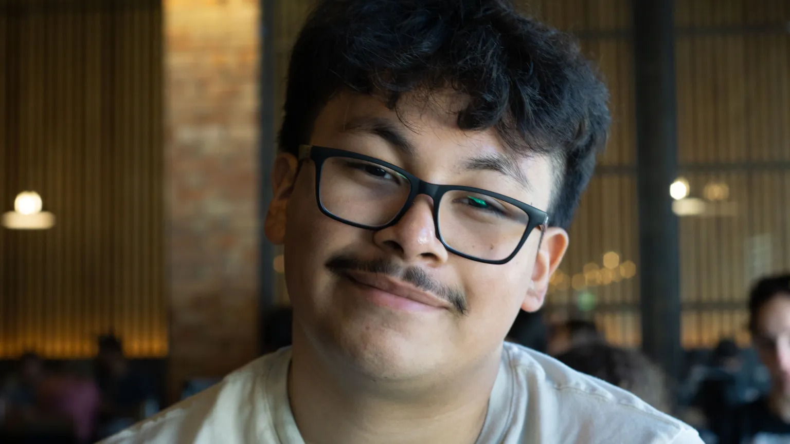

Raul Gomez

Summary
Software development student proficient in object-oriented programming, experienced in Java and Python, and skilled in web development tools.
Experienced in working on client-based applications through sprints, seeking a software developer internship.
Education
Green River College - Auburn, WA
AAS-T Software Development, June 2026
Major: Software Development (Applied Computer Science)
Green River College - Auburn, WA
Bachelor of Applied Science, Expected June 2028
Major: Software Development (Applied Computer Science)
Skills and Certifications
- Languages: Java, Python, C++, JavaScript, SQL, PHP
- Web: HTML, CSS, Bootstrap, JSON, jQuery
- Agile: Pair programming, working in sprints
- Certifications: Coursera - Introduction to AI, Start Writing Prompts Like a Pro
- Tools: Git/GitHub, Linux, Docker, VS Code
Experience
Clerk - Fred Meyer - Maple Valley, WA
June 2023 - Present
- Customer service
- Collaborating with team members
- Inventory management
Software Developer - Client Capstone
April 2026 - June 2026
- Developed a scheduling application using HTML, CSS, JavaScript, and PHP
- Collaborated with 4 team members in sprints
- Worked alongside the client to create a user-friendly webpage
Achievements and Activities
- Nonprofit hackathon, Awardee, 2025
- Eloise's Cooking Pot Food Bank, Volunteer, 2025
- Local 242 Union Scholarship, Awardee, 2026